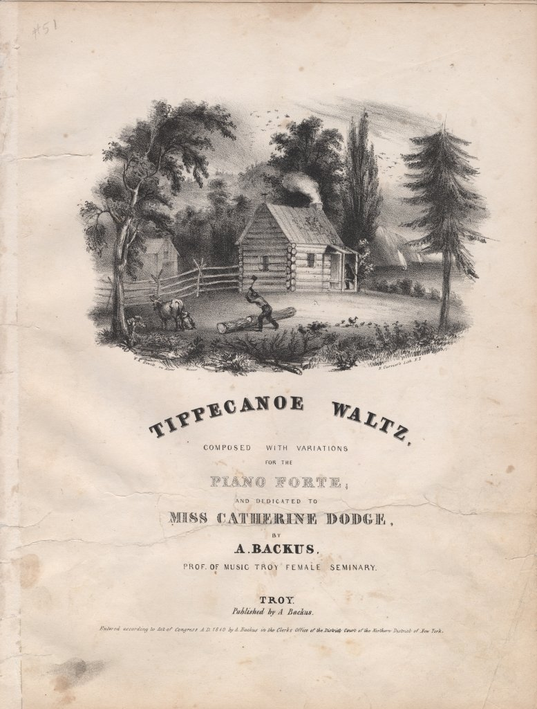

| Field | Detail |
| TOC Fit | Chapter 10 · Essay prompt 10.1 (How Democratic Was Jacksonian Democracy?) |
| Why Here | A second Currier cover gathers the 1840 campaign’s visual vocabulary of the log cabin, the farmer splitting rails, and grazing cattle into a single commercial print. Students can weigh how campaign imagery used frontier farming to sell a wealthy general as a man of the people. |
| Treatment | Public-domain image; printed cover text transcribed from the image |
The 1840 campaign was the first in which a party’s symbols were mass-produced on everything from handkerchiefs and dishes to sheet music. Covers for Harrison music often paired a log cabin and farm scenes with a reminder of his military past, especially the Battle of Tippecanoe in 1811, when his troops defeated warriors associated with the Shawnee leaders Tenskwatawa and Tecumseh in Indiana Territory. A. Backus of Troy, New York, composed and published this waltz and dedicated it to a local young woman, Miss Catherine Dodge. William K. Hewitt drew the cover design on the lithographic stone, and Nathaniel Currier’s firm printed it. Such music placed partisan imagery in the parlor, where women and children, though excluded from voting, took part in the campaign’s culture. Editorial note. This entry presents the cover of the eight-page sheet music from the Susan H. Douglas Political Americana Collection at Cornell University Library (Gale 6538). According to the catalog record, the cover was drawn on stone by W. K. Hewitt and printed by N. Currier’s lithographic firm in New York, and the pamphlet carries an 1840 copyright (“court records”) statement. CAUTION: The cover is a partisan advertisement; its vignette of a log cabin, a man splitting logs, and cattle in the yard presents the Whig image of Harrison as a plain frontier farmer. (The cover itself shows no battle scene.) Text transcribed for this reader from the repository image; illegible words are marked [illegible]. |
|
 |
|
UNIT 3 · AN EXPANDING NATION | HISTORY B17A | DANIEL GARZA, M.A.
|